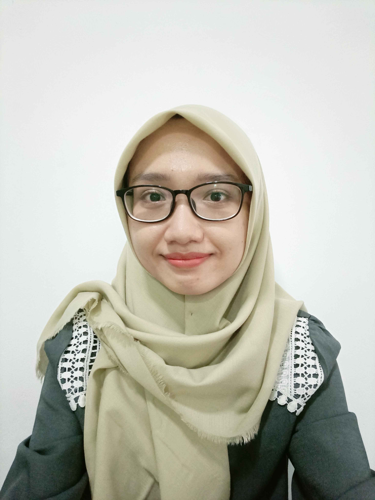

Nyssa Azaria Dewani

Summary
A plant tissue culture technician who has interest in web development. I'm
still learning to pursue my new career.
Education
IPB University (2015 - 2021)
Bachelor of Agriculture - Department of Agronomy and Horticulture
Work Experience
Plant Tissue Culture Laboratory Technician (Full-Time) - CV. Embrio Multi
Agro
November 2023 - June 2024
-
Carried out plant propagation using tissue culture techniques for
banana, taro, potato, and porang (Amorphophallus muelleri)
-
Prepared tissue culture medium such as basal MS medium, medium for
callus induction, medium for shoot induction, and rooting medium
-
Performed weekly observation of tissue culture plant and input the data
into the company data google drive storage
Data Entry Operator for Sensus Pertanian 2023 (Contract) - Badan Pusat
Statistik Kabupaten Pekalongan
July 2023 - September 2023
-
Input 1600 documents from field data collection into server databases in
two months
- Performed data cleansing and data validation
- Resolved any data entry errors
Field Data Collector for Registrasi Sosial dan Ekonomi 2022 (Contract) -
Badan Pusat Statistik Kabupaten Pekalongan
October 2022 - November 2022
- Visited and interviewed 204 families in one month
-
Identified and compared the border region of the neighborhood (RT) in
the available map with the actual condition
-
Conducted the list of family verification to the head of neighborhoods
-
Completed the location geotagging and took the pictures of the
residential building via mobile application
Principles of Agronomy Practice Class Assistant (Part-Time) - Department
of Agronomy and Horticulture IPB University
August 2018 - January 2019
- Assisted 29 students in field practice classes
- Prepared the materials for the practice classes
-
Checked the condition of the tools and instruments before and after the
classes
- Managed the student attendance list
Skills
- Tissue Culture
- Microsoft Office
- HTML
- CSS
Certification
Badan Nasional Sertifikasi Profesi (BNSP)
Issued May 2023 · Expires May 2026
Credential ID No. Reg. TAN. 984 00152 2023